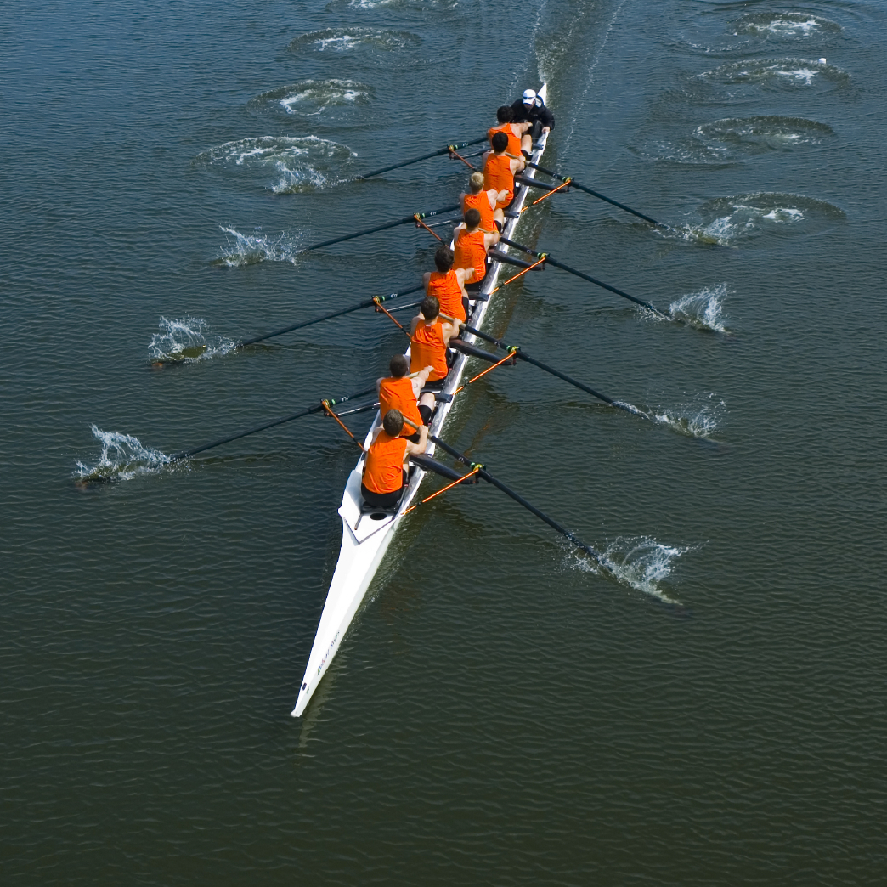
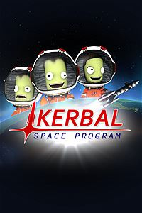

Work for Fun
I will often find myself sucked into a project that while it is work,
it is just so interesting that I am driven to complete it without any reward for its completion.
For example, I first learned python because I was actually writing a Jython script to automate something on an Android phone.
It was a difficult process since I didn't know any of the sintax, but I mussceled through it.
Crew

Rowing Crew
I have been rowing crew for about 2 and half years at this point and its gotten only marginally easier.
It is a lot of hard work, but when it is good it is great. Crew involves a lot of pain,
and I have often asked myself why I do it sometimes I fail to come up with a response.
But then I consider the person I was before. The lethargic, tired, slob who spent most of his time in bed.
This is where I realize how much good it has done me.
Video Games
While I don't have the time nor computing power to play games anymore, when I did my favorite game was Kerbal Space Program.
There is no set object to the game rather you are given a sandbox of accurate physics and semi-realistic parts to create a space program.
Through playing this game I gained a better intuition about physics.
KSP

Interests
My main interest right now is Machine Learning.
I have been doing it for a while, but there is just so much more I see others doing and want to get on board with.
I have not yet touched LSTMs or any other type of RNN, so I would like to try working with that type of data.